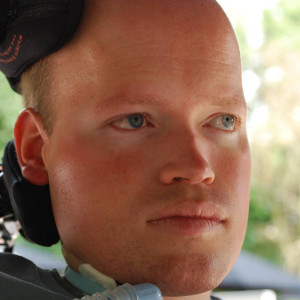

<!-- Profile Section -->
<section id="profile" class="sec sec-main">
    <div class="container">
        <div class="row">
            <div class="col-sm-6 col-md-6 col-lg-6">
                
            </div>
            <div class="col-sm-6 col-md-6 col-lg-6">
                <p class="lead text-left"><b>{{ site.title }}</b></p>
                <p class="text-left">PhD in Computer Science</p>
                <p class="text-justify">
                    Heerko is an assistant professor at the <a href="https://www.cs.rug.nl/ds" target="_blank">Distributed Systems</a> group of the <a href="https://www.rug.nl" target="_blank">University of Groningen</a>, the Netherlands.
                    In addition, Heerko is a (remote) visiting researcher at the <a href="https://research.csiro.au/bpli/" target="_blank">Business Processes and Legal Informatics Team</a>, Data61, <a href="https://www.csiro.au/" target="_blank">Commonwealth Scientific and Industrial Research Organisation (CSIRO)</a>, Brisbane.
                    He received the Ba. in information and communication technology at the Hanzehogeschool Groningen in 2004, and the B.Sc. and M.Sc. in computer science at the University of Groningen in 2006 and 2008, respectively.
                    He successfully defended his thesis "Business Process Variability: a Study into Process Management and Verification" at the University of Groningen in 2016.
                    His research interests include business process and service composition compliance, verification, and variability.
                </p>
                <p class="text-left">University of Groningen, Nijenborgh 9, 9747 AG Groningen, The Netherlands</p>
                <p class="text-left">Bernoulliborg room 591 (Tue 10:00 -- 15:00)</p>
                <p class="text-left">h.groefsema [at] rug.nl</p>
            </div>
        </div>
    </div>
</section>

{% include double-column-section-left.html topic="Research" icon="fa-graduation-cap" text="The increased use of digital technologies by organizations sparks a rise in legislation. European laws and directives such as the AI act demand regulatory compliance systems. Implementing regulatory compliance is a key and pressing challenge for organizations to ease audits, and for governments to protect citizen rights. However, the problem of regulatory compliance verification quickly becomes undecidable. As a result, we must design smart and practical applicable systems." %}
{% include double-column-section-right.html topic="Workflows" icon="fa-diagram-project" text="To prevent regulatory compliance violations, we research tools that automatically check whether workflows of organizations comply with legislation. Workflows, or business processes, are collaborations between actors that achieve specific value-added goals. Organisations use workflows to implement control and coordination in case management systems (e.g., in insurance, banking, or hospitals) or in (smart) manufacturing. As legislation is being introduced to workflows, there is an emerging need for automated regulatory compliance verification of the models that describe these mechanisms. Our tools are able to formally prove whether workflow models adhere to regulations." %}
{% include double-column-section-left.html topic="Audits" icon="fa-magnifying-glass" text="To detect regulatory compliance violations, we research tools that automatically check whether workflow executions adhere to legislation. When automated, executions of workflows, resulting in a specific execution instance and case, are recorded in event logs. Event logs contain recordings of important event occurrences in the execution of information systems. Our tools are able to formally prove whether current and past workflow executions captured in event logs adhere to regulations." %}
{% include double-column-section-right.html topic="Process families" icon="fa-code-compare" text="To allow for adaptation, flexibility and variability of workflows, we develop tools that automatically check whether workflows are part of the same family of processes. That is, several variants of the same workflow may exist due to, e.g., mergers, customer tailored services, diverse market segments, or distinct legislation across borders. By introducing the concept of process families, we allow organizations to deviate from their prescribed processes using normal process model notation and automatically verify if such a deviation is allowed." %}

{% bibliography %}